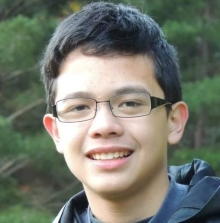

|  | My name is Jovan Catampongan, I
am professional webmaker and a professional logo creator. I have a degree on visual effects and graphic design. I've been in university for 2 years so if you need someone to do some computer software job for you, I'll do it :) Likes: Video Games, Steam (software like Xbox Live but on PC), Internet, Computers, TESV, TF2 Dislikes: Sports -_- |
Click the Buttons below